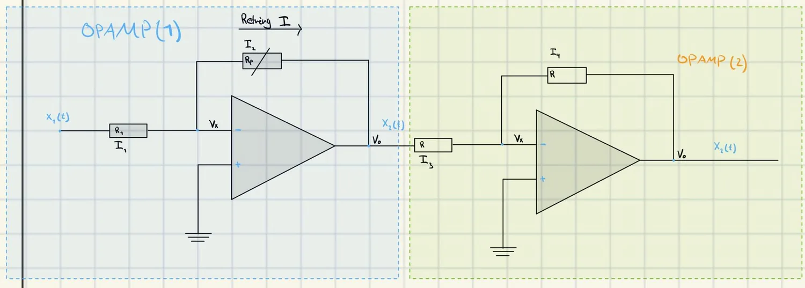
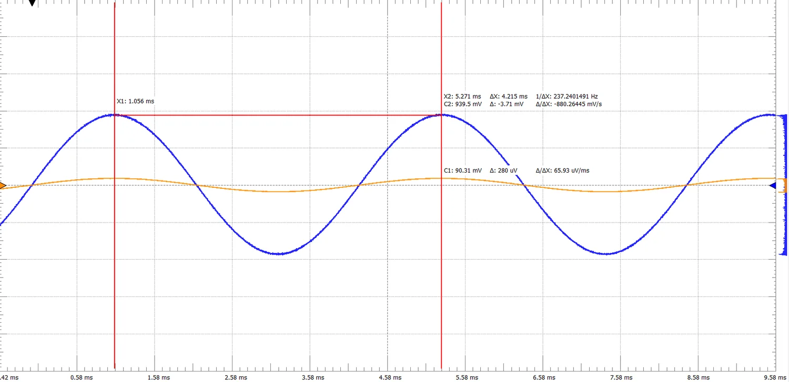
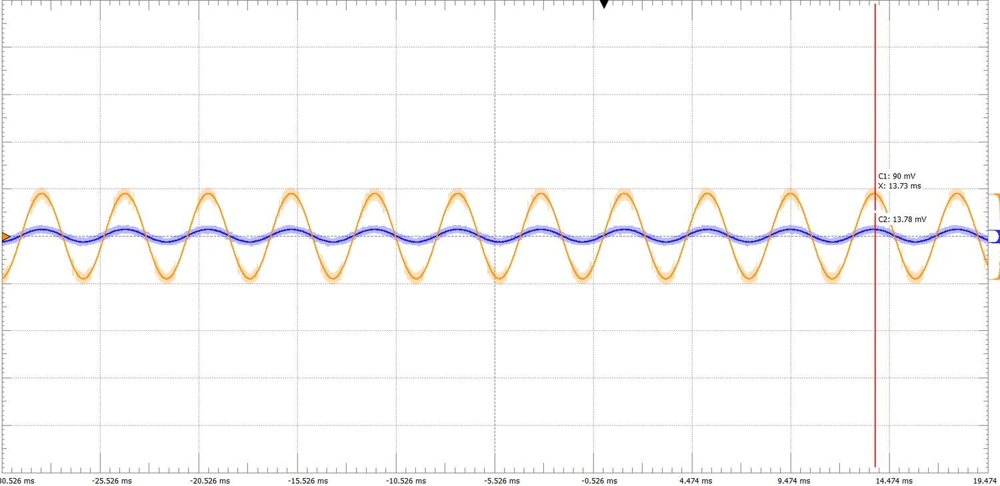

DP1 Signal level controller
Controller that amplifies or attenuates a 237 Hz signal, built with two inverting operational amplifiers and a potentiometer.

Result
- Maximum gain 20.5 dB (A about 10.5) and maximum attenuation of minus 16.1 dB.
- Signal-to-noise ratio of 28.45 dB.
- Built with an LF353P and a 10 kΩ potentiometer, measured with Analog Discovery 2.
Figures



